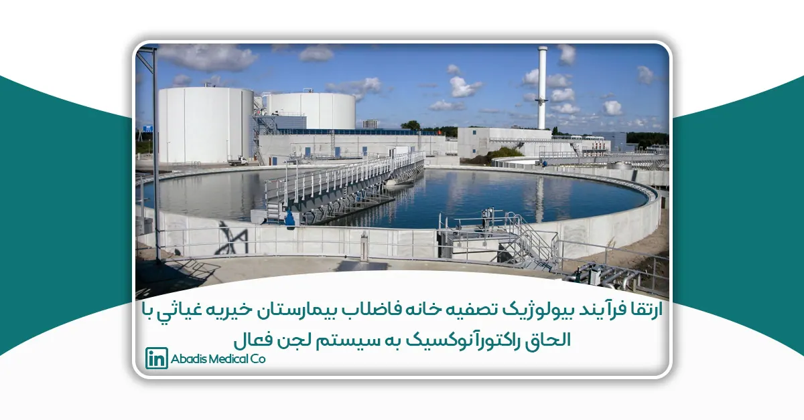
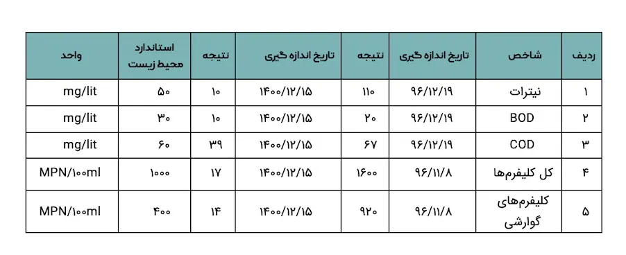

این مقاله توسط سرکارخانم حکيمه دست پاک و سرکارخانم سميه توكلی نوشته شده؛ و برای یازدهمین کنگره کنترل عفونت ارسال شده است.
خلاصه
فاضلاب خروجی بیمارستان ها که داراي انواع میکروارگانیسمهای بیماریزا، رادیواکتیو، مواد دارویی و مواد سمی شیمیایی هستند چنانچه بدون تصفیه دفع گردند موجب آلودگی و اشاعه بیماری میشوند؛ لذا بررسی وضعیت خروجی فاضلاب بیمارستانها برای برنامه ریزی ضروری است. هدف از این پژوهش بررسی کارایی حوضچه انوکسیک در تصفیه خانه فاضلاب بیمارستان خیریه غیاثی بوده است. نتایج نشان داد که شاخص هاي نیترات (COD،BOD، (NO3، کلیه کلی فرمها و کلی فرمهای گوارشی دارای کاهش واضحی بعد از نصب حوضچه آنوکسیک نسبت به قبل از ارتقا سیستم و نصب حوضچه بوده است.
كلمات كلیدی: فاضلاب، آنوکسیک، بیمارستان
مقدمه
امروزه همگام با افزایش جمعیت، سرعت تولید فاضلاب نیز افزایش یافته و همین امر سبب تحمیل بار آلودگی بسیاري به محیط زیست اطراف و اکوسیستمهاي آبی گردیده است. بیمارستانها در زمره منابع مهم تولیدکننده فاضلابهاي خطرناک به شمار می آیند که حاوی ترکیبات شیمیایی خطرناک، باقیماندههای دارویی، مواد سمی، میکروارگانیزم های بیماری زا و نوترینتها میباشند. امروزه رشد جلبکی اساسا در اثر نیتروژن موجود در پسابهای خروجی ایجاد میشود یکی از حیاتی ترین مشکلات زیست محیطی میباشند.
با توجه به حجم بسیار زیاد مصرف آب در مراکز درمانی به خصوص بیمارستانهای عمومی باعث شده، نه تنها ، تهیه این میزان آب بسیار سخت و پرهزینه بوده بلکه تصفیه و دفع فاضلاب این مراکز از نظر اقتصادی و حفظ محیط زیست بسیار حائز اهمیت باشد، به طوري که اکثر بیمارستان هاي کشور جهت تصفیه و دفع فاضلاب با مشکلات عدیدهای روبرو میباشند. جمع آوری و تصفیه فاضلابهای بیمارستانی مطابق ضوابط فنی و بهداشتی، یکی از روش های حفاظت از بهداشت و محیط زیست جوامع میباشد.
نیتروژن و فسفر از جمله مواد مغذی موجود در فاضلاب بیمارستانی میباشند که به دلیل خصوصیات ذکر شده در رابطه سمیت فاضلاب بیمارستانی به کمک سیستم های متداول تصفیه از راندمان حذف مناسبی برخوردار نمیباشند. تجمع نوترینتها در آبهای سطحی و زیرزمینی در نتیجه تخلیه فاضلاب، میتواند مشکلات عدیدهای را متوجه اکوسیستمهای آبی و متعاقب آن سلامت انسان و حیوانات نماید. از جمله این مضرات میتوان به ایجاد پدیده اوتریفیکاسیون، تخریب کیفیت منابع آبی، افزایش هزینههای تصفیه، کاهش غلظت اکسیژن محلول آبهای سطحی و ایجاد عوارض بر سلامت انسانها اشاره نمود.
تصفیه فاضلاب بیولوژیک یکی از شیوههای رایج تصفیه فاضلاب به شمار میرود.
راندمان بالای حذف آلودگیهای مختلف از فاضلاب صنعتی و صرفه اقتصادی آن موجب شده که امروزه در سراسر دنیا کاربردهای گستردهای داشته باشد.
یکی دیگر از شیوههای تصفیه فاضلاب بیولوژیک شیوه آنوکسیک (بدون اکسیژن) میباشد. در سیستم هوازی میکروارگانیسمها از اکسیژن بهعنوان الکترون گیرنده استفاده میکنند، ولی در سیستمهای انوکسیک اکسیژن موجود در ترکیباتی همچون نیترات بهعنوان الکترون گیرنده استفاده میشود. پس در نتیجه این مرحله از تصفیه بیولوژیک در حذف آلایندههایی همچون نیترات طی فرایند دينیتریفیکاسیون بسیار کاربرد دارد. حضور نیترات در آب میتواند مشکلات جبرانناپذیری بر سلامت انسانها بهخصوص کودکان به وجود آورد.
مطالعه حاضر در خصوص ارتقا سیستم لجن فعال بیمارستان خیریه غیاثی با استفاده از روش انوکسیک جهت حذف عامل نیترات (COD–BOD- (NO3- کلیه کلیفرم ها و کلیفرمهای گوارشی میباشد.
مواد و روشها
تصفیه خانه بیمارستان در سالهای قبل به صورت سپتیک بوده و از سال 1397 با روش لجن فعال بهره برداری شد. بیمارستان خیریه غیاثی دارای 60 تخت فعال و متوسط مصرف روزانه آب بیمارستان ۴۲ متر مکعب میباشد، دبی ورودی فاضلاب 34 متر مکعب در روز میباشد. همچنین واحدهای تصفیه این بیمارستان شامل آشغال گیر، لجن برگشتی، حوضچه انوکسیک، حوضچه هوادهی، ته نشینی و حوضچه کلر زنی میباشد. نوع فرایند مورد استفاده در این تصفیه خانه لجن فعال متداول، با هوادهی گسترده میباشد. این بیمارستان دارای حوضچه آشغالگیر به حجم 30 متر مکعب، لجن برگشتی به حجم 30 متر مکعب، حوضچه انوکسیک به حجم 12 متر مکعب، حوضچه هوا دهی به حجم 60 متر مکعب، تانک ته نشینی به حجم 15 متر مکعب، حوضچه کلرزنی به حجم 12 متر مکعب میباشد.
چندین نمونه از پساب خروجی تصفیه خانه بیمارستان، با استفاده از نمونه برداری لحظهای و مرکب به دست آمد. سپس نمونهها جهت آنالیز، تفسیر و گزارش کیفیت نمونهها به آزمایشگاه انتقال داده شد. کلیه پارامترهای مزبور مطابق کتاب روشهای استاندارد متد، مورد سنجش قرار گرفت.
يافتهها
مشخصات کلی تصفیه خانه فاضلاب بیمارستان مورد مطالعه در جدول 1 و نمودارهای زیر قابل مشاهده میباشد. بررسی مقادیر کمی و کیفی فاضلاب بر اساس اندازه گیریهای انجام شده توسط شرکت آرین فن آزما (آزمایشگاه همکار و معتمد سازمان حفاظت محیط زیست – سازمان ملی استاندارد ایران) قبل و بعد از نصب حوضچه انوکسیک برای شاخص نیترات(COD–BOD-(NO3- کلیه کلیفرمها وکلیفرمهای گوارشی در جدول زیر قابل مشاهده میباشد:
جدول ۱-مشخصات فاضلاب مورد مطالعه
| تخت فعال | تولید روزانه فاضلاب (m3.d) | سرانه آب (m3.d) | سیستم تصفیه | بیمارستان |
| 60 | 34 | 42 | لجن فعال | خیریه غیاثی |
جدول ۲-روند تغییرات شاخصهاي مورد مطالعه پس از نصب حوضچه آنوكسیک

بحث
نتایج تحقیقات یادگاری و همکاران نشان داد که درصد حذف نیترات در بیوراکتور انوکسیک در محدوده% ۹۷–۷۳ بود. غلظت نیتروژن نیتریت در خروجی سیستم ترکیبی نیز در محدوده ۰.۰۱ الی ۰.۰۲ mg NO2-N/L بود. غلظت نیترات و نیتریت در خروجی سیستم همواره کمتر از مقدار مجاز سازمان بهداشت جهانی بود. COD خروجی از سیستم ترکیبی همواره کمتر از 15mg/L و درصد حذف COD سیستم% ۰.۱±۹۲.۸ درصد بدست آمد. همچنین کدورت خروجی سیستم همواره کمتر از NUT 2 بود که نشاندهنده نقش موثر غشا در جلوگیری از خروج مخلوط میکروبی از سیستم بود.
بر اساس نتایج تحقیقات شاهنده و همکاران ، اضافه کردن دو مرحله بی هوازي و انوکسیک (7 مرحله) به جای 5 مرحله متداول در سیستم SBR و همچنین وجود عملیات اختلاط در حالت بی هوازی / انوکسیک و هوازی در حذف مواد آلی و ازت و فسفر راندمان قابل توجهی داشت و بعنوان پیشنهاد میتواند گزینه مناسبی جهت تصفیه فاضلاب در نظر گرفته شود.
نتیجه گیری
ارتقا سیستم فاضلاب بیمارستان به عنوان یکی از نقاط مخاطره آمیز برای کل جامعه بوده که میبایست همیشه مد نظر هر سیستم و سازمانی باشد. حذف و یا کاهش شاخصهای شیمیایی و میکروبی ذکر شده در متن مقاله با استفاده از حوضچه انوکسیک یکی از دستاوردهای بیمارستان خیریه غیاثی جهت کمک به محیط زیست و حفظ و رعایت استانداردهای محیط زیست میباشد. شایان ذکر است انجام تحقیقات و استفاده از متدهای علمی جدید میبایست همیشه مد نظر قرار گیرد.